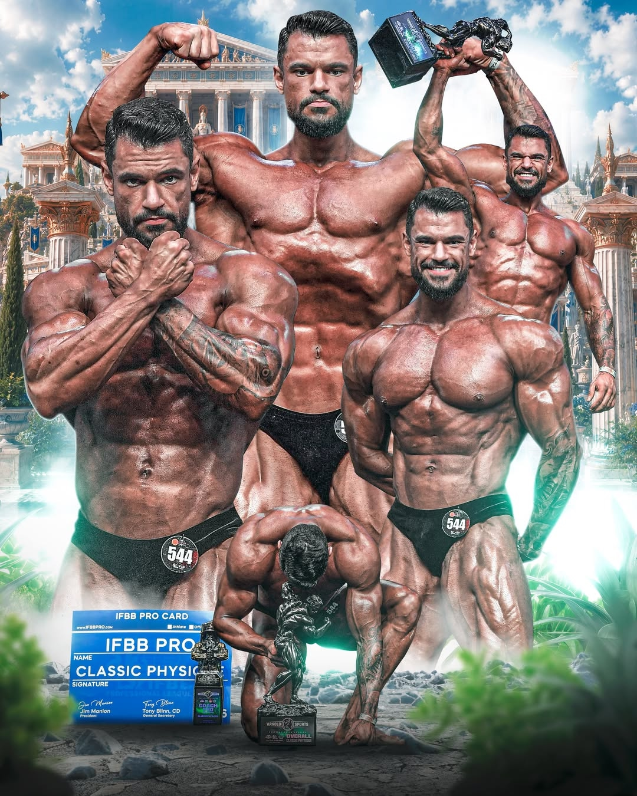
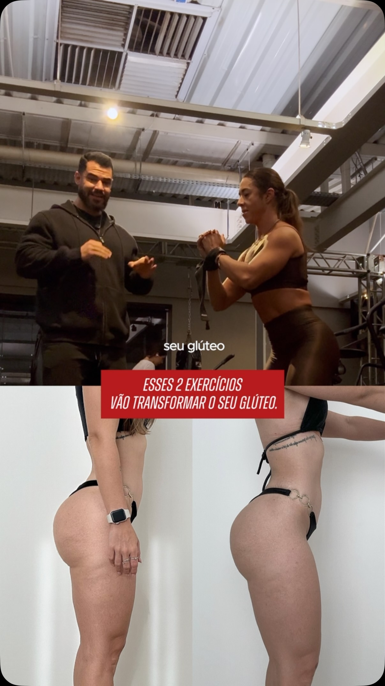
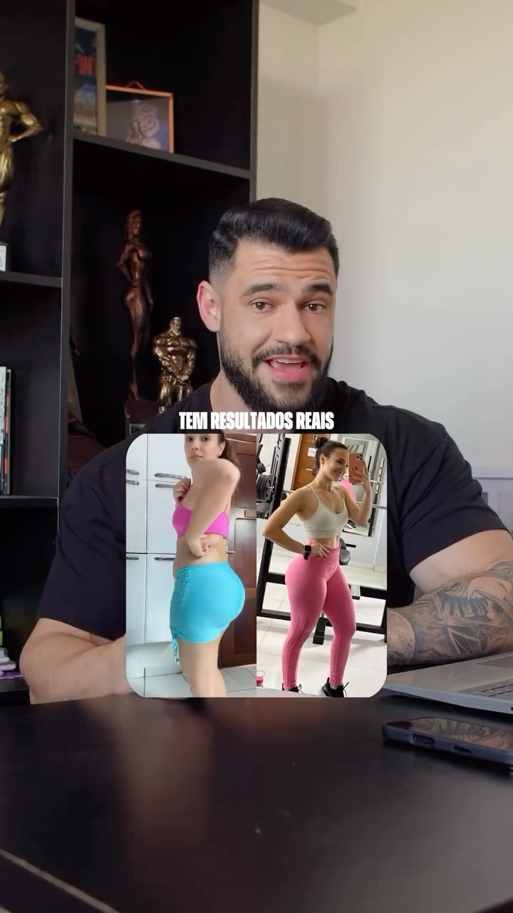

LAPIDE SEUS GLÚTEOS E DEFINA A CINTURA
Periodização individualizada para a biomecânica do seu corpo e os aparelhos da sua academia. Quebre platôs sob orientação direta do atleta José Mário.
De prática real nos palcos e nas salas de musculação
Atleta profissional gabaritado internacionalmente
Comunidade engajada acompanhando o trabalho diariamente
Treinos adaptados aos aparelhos exatos do seu espaço
TALVEZ O PROBLEMA SEJA VOCE. A VERDADE QUE NINGUEM TE CONTA.
A maioria das mulheres passa anos na academia acreditando que não evolui por falta de genética. A realidade é simples: você está gastando dedicação em treinos sem método.
Resultado sólido exige método, técnica e biomecânica precisa. Não existe mágica.
O CICLO DA ESTAGNACAO
- Fichas padronizadas de academia sem considerar sua estrutura física.
- Exercícios sem ajuste de amplitude e sem conexão muscular eficiente.
- Troca constante de rotina toda semana por posts de redes sociais.
- Falta de progressão ordenada de cargas e repetições.
- Culpar a genética e desistir antes de ver resultados nítidos.
O PROTOCOLO JOSE MARIO
- Prescrição cirúrgica para os aparelhos que a sua academia possui.
- Foco biomecânico para ativar glúteos sem sobrecarregar joelhos ou lombar.
- Correção minuciosa da sua postura através de vídeos no WhatsApp.
- Planejamento em ciclos trimestrais para quebrar qualquer platô.
- Lapidação visível de curvas, firmeza muscular e redução de medidas.
DA ARENA PROFISSIONAL PARA O SEU DIA A DIA
José Mário não é um perfil de frases motivacionais na internet. Ele é atleta profissional IFBB Pro, campeão no palco do Arnold Classic e graduado em Educação Física pela Universo, com mais de 10 anos de experiência prática e acadêmica.
Ele experimentou no próprio corpo o que significa construir massa muscular de alto nível, lapidar proporções e quebrar limites. Hoje, ele transfere essa mesma disciplina científica para a consultoria de mulheres que trabalham, estudam, têm rotinas intensas e precisam de um treino objetivo, seguro e de alta resposta visual.

COMO FUNCIONA O PROTOCOLO DE 3 MESES
Um caminho estruturado do primeiro dia até a consolidação da sua evolução física.
Avaliação Biomecânica e Rotina
Você preenche a anamnese completa, envia fotos posturais e informa os equipamentos da sua academia, sua rotina de horários e seu histórico anterior de treino e desconfortos.
Prescrição Sob Medida
José Mário monta sua periodização detalhada, com divisão inteligente de volume para glúteos e posteriores, vídeos de cada movimento e acesso ao aplicativo exclusivo.
Ajustes e Correções Contínuas
Você grava execuções dos exercícios principais e envia diretamente no WhatsApp. José Mário analisa a postura, ajusta das cargas e calibra os estímulos ao longo do ciclo.
TRANSFORMACOES REAIS EM CICLOS DE 3 MESES
Resultados visíveis de alunas que deixaram os treinos genéricos para trás e aplicaram o método.
Firmeza, Projeção e Biomecânica
Correção precisa no posicionamento dos pés e no alinhamento do quadril, proporcionando hipertrofia visível e redução nítida da celulite.
Evolução Treinando 2x na Semana
"Obtive um resultado maravilhoso onde eu almejava um formato diferente e meu resultado foi esse outro corpo em 3 meses e meio sem loucuras."

Exercícios Estratégicos
Ajuste na elevação pélvica e agachamentos específicos para ativar o glúteo máximo sem sobrecarregar a região lombar.

Diminuição de Medidas Reais
Aluna com rotina corrida de trabalho conquistando definição de cintura e tônus muscular com treinos objetivos de 50 minutos.
TUDO O QUE VOCE RECEBE NO ACOMPANHAMENTO
Estrutura profissional para que você nunca mais treine com insegurança.
Aplicativo Exclusivo
Seu planejamento completo na tela do celular, com contagem de séries, cronômetro de descanso e registro de cargas.
Vídeos de Cada Movimento
Demonstrações em vídeo com explicações detalhadas de postura, pegada e amplitude para cada exercício da sua ficha.
Canal Direto no WhatsApp
Envie vídeos dos seus treinos para correção e tire qualquer dúvida diretamente com José Mário ao longo da semana.
Ênfase em Glúteos e Cintura
Distribuição inteligente de estímulos para maximizar a hipertrofia nos pontos certos sem engrossar a cintura.
Adaptação à sua Academia
Não importa se você treina em rede grande, academia de bairro ou estúdio de condomínio: o treino é moldado aos seus aparelhos.
Atualização Periódica de Ficha
Treinos renovados no momento exato em que seu corpo se adapta, garantindo evolução contínua sem platôs.
ESTA CONSULTORIA E PARA VOCE?
Transparência antes de qualquer contratação. Buscamos alunas comprometidas.
Quem Deve Passar Longe
- Você busca atalhos milagrosos ou resultados sem dedicação semanal.
- Você quer acumular fichas no celular sem seguir o que está prescrito.
- Você troca de treino toda semana por modismos aleatórios da internet.
- Você não está disposta a gravar execuções para receber orientações técnicas.
- Você não tem paciência para construir massa magra com consistência e método.
O Perfil da Aluna Que Evolui
- Você já treina há meses ou anos, mas estagnou e parou de ver o glúteo responder.
- Você quer a segurança de seguir o planejamento de um atleta profissional IFBB.
- Você valoriza o tempo que passa na academia e quer que cada repetição valha a pena.
- Você quer um acompanhamento próximo, técnico e transparente de verdade.
- Você está pronta para se comprometer com um ciclo estruturado de 3 meses.
ESCOLHA O FORMATO DO SEU ACOMPANHAMENTO
Cada aluna passa por uma triagem direta com José Mário para validar disponibilidade de vaga e alinhamento do protocolo.
Ciclo Trimestral
Foco em destravamento muscular e lapidação inicial
Para alunas que já treinam com frequência, mas estagnaram nos resultados e precisam de correção técnica e estímulos novos.
- Avaliação biomecânica e postural individual completa
- Periodização adaptada aos aparelhos da sua academia
- Vídeos demonstrativos de execução no aplicativo
- Correções técnicas de movimentos por vídeo no WhatsApp
- Planilha inteligente de progressão de cargas quinzenal
- Canal direto com José Mário para dúvidas e ajustes
Ciclo Semestral
Periodização prolongada para ganho de volume e definição profunda
Para alunas que buscam mudança estética estrutural sem efeito sanfona, com periodizações que evoluem conforme o corpo responde.
- Tudo do ciclo trimestral com acompanhamento prolongado
- Reavaliações posturais e biomecânicas a cada 4 semanas
- Trocas estratégicas de estímulos para hipertrofia contínua
- Correção técnica ilimitada e prioritária no WhatsApp
- Ajustes finos de volume e densidade para glúteos e cintura
- Consolidação definitiva de curvas e maturidade muscular
Protocolo Sob Medida
Adaptação anatômica individual ou alta performance esportiva
Para quem possui histórico de dores articulares (joelho, lombar, ombro) ou atletas em preparação avançada para competições.
- Anamnese clínica aprofundada de limitações e desvios
- Seleção cirúrgica de exercícios com proteção articular total
- Adaptações imediatas de treinos para rotinas atípicas ou viagens
- Periodização de alta especificidade para pontos fracos do físico
- Acompanhamento em tempo real para controle de desconfortos
- Alinhamento estrito entre treino e metas competitivas
GARANTIA INCONDICIONAL DE 7 DIAS
Você inicia hoje seu acompanhamento, recebe sua anamnese completa, acessa seu treino no aplicativo e testa a dinâmica do contato com José Mário. Se durante os primeiros 7 dias você sentir que o método não é para você, basta solicitar e devolveremos 100% do seu valor. Sem perguntas e sem atrito. O compromisso com a sua evolução é total.
PERGUNTAS FREQUENTES
Respostas claras para as principais dúvidas sobre o funcionamento da consultoria.
Sim. Esse é um dos maiores diferenciais da consultoria de José Mário. O treino não é uma ficha pré-fabricada: ele é prescrito levando em consideração exatamente os aparelhos e pesos livres que você tem à disposição no seu espaço de treino.
Você apoia o celular e filma sua execução nos principais exercícios (como agachamento, búlgaro ou elevação pélvica). Envia no WhatsApp e o próprio José Mário analisa sua postura, cadência e amplitude, enviando orientações em áudio e texto para ajustes imediatos.
Com certeza. O aplicativo é intuitivo e mostra cada exercício com vídeo demonstrativo de execução correta. Além disso, o canal direto no WhatsApp tira dúvidas de forma rápida para você nunca treinar com receio de errar.
Nas primeiras 3 a 4 semanas você já nota melhora na postura, na contração muscular e na redução de inchaço. A transformação visual expressiva de aumento de glúteos e redução de medidas se consolida no ciclo completo de 3 meses.
Após a validação da sua vaga na triagem, você recebe imediatamente o link da anamnese detalhada e as orientações para envio de fotos e vídeos posturais. Em até 48 horas úteis sua periodização completa estará disponível no aplicativo para início imediato.
PARE DE TENTAR NO ESCURO. COMECE HOJE SEU NOVO CICLO.
Você tem a oportunidade de ser orientada por um atleta profissional IFBB e conquistar a transformação que nenhum treino genérico conseguiu te entregar.
Inscrição segura | Garantia incondicional de 7 dias | Suporte individual